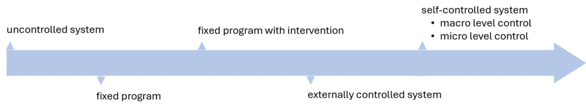
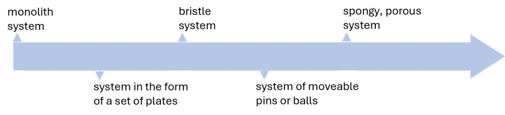
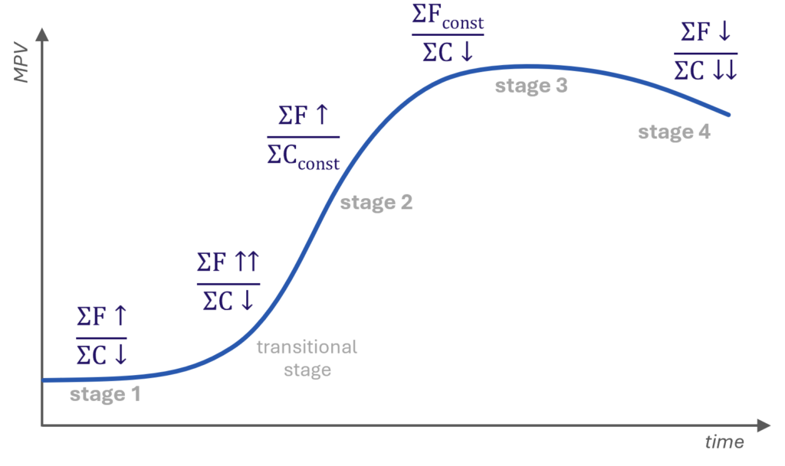
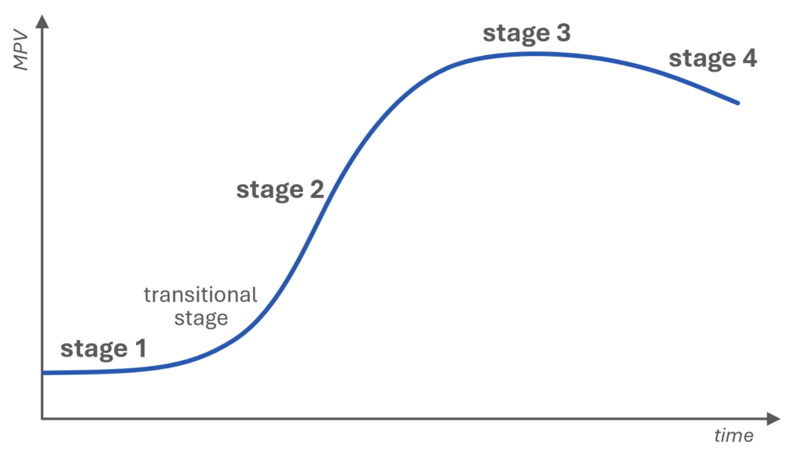
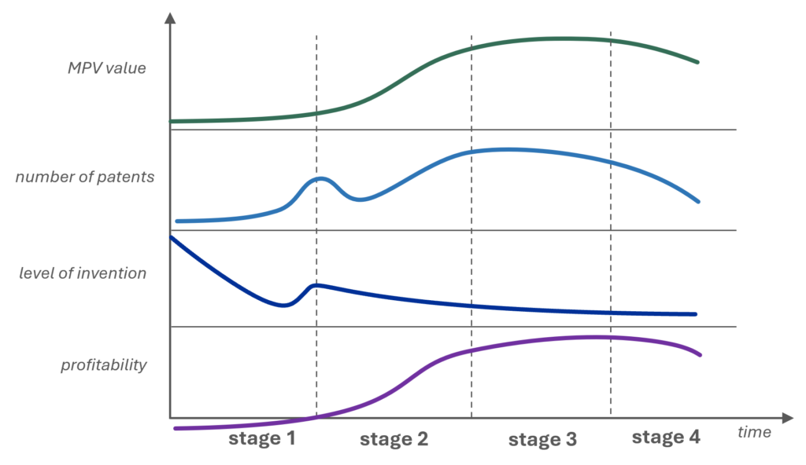
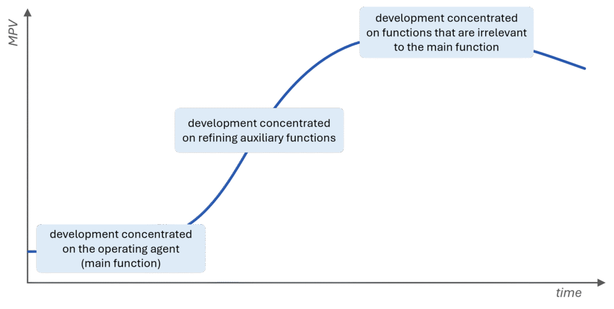

Trends of engineering systems evolution (TESE)
Trends of engineering systems evolution (TESE) are statistically proven or empirically derived directions of engineering system development that describe the natural transition of engineering systems from one state to another.
Overview
The identification and understanding of trends of engineering systems evolution (TESE) is arguably TRIZ’s most significant contribution to the science of innovation. They also form the basis for many TRIZ tools.
TESE emerged from an in-depth analysis of product and technology evolution across various industries. Studying their history – based on the examination of thousands of patents – revealed that all products and technologies follow similar conceptual patterns. TESE define the stages that nearly all products and technologies are likely to go through during their development. This does not mean that designing a product that deviates from TESE is technically impossible, but rather that sooner or later, it is likely to fail.
At the core of TESE lies the assumption that technologies evolve along their own trajectory, independent of human influence. For this reason, they are often referred to as the voice of the product. However, it is important to note that to be fully effective, TESE should be integrated with market needs – the voice of the customer.
Hierarchical structure of TESE
TESE are organized in a hierarchical structure that reflects the relationships between them. In this structure, a lower-level trend functions as a sub-trend (mechanism) of a higher-level trend. However, each trend also has its own internal mechanisms that drive system evolution. In other words, for a system to evolve according to a higher-level trend, both its internal mechanisms and the mechanisms of its sub-trends must be implemented.

It is important to note that both TESE and their structure have evolved over decades, which is why different versions can be found in TRIZ literature. The officially approved definitions of the trends and their hierarchy, as recognized by MATRIZ, were developed by the St. Petersburg TRIZ Scientific School, which is considered the most pragmatic TRIZ school.
- Trend of S-curve evolution: as an engineering system evolves, the evolution of each main parameter of value (MPV) describes an S-shaped curve in time.
- Trend of increasing value: an engineering system evolves so that its value always increases.
- Trend of transition to the supersystem: as an engineering system evolves, it is integrated with supersystem components.
- Trend of increasing completeness of system components: as an engineering system evolves, it acquires the following typical functions: operating agent, transmission, energy source, and control system.
- Trend of decreasing human involvement: as an engineering system evolves, the number of engineering system functions performed by humans decreases.
- Trend of increasing degree of trimming: as an engineering system evolves, system elements (components or operations) are eliminated without impairing the functionality of the system, and possibly improving it.
- Trend of flow enhancement: as an engineering system evolves, flow rates of substances, energy, or information increase, and/or the flows are better utilized.
- Trend of increasing coordination: as an engineering system evolves, characteristics of the components of the engineering system become more coordinated with each other and with the supersystem.
- Trend of uneven development of system components: as an engineering system evolves, development is concentrated on the operating agent first, and on the rest of the system later.
- Trend of increasing controllability: as engineering systems evolve, they develop more ways in which they can be controlled.
- Trend of increasing dynamization: as an engineering system evolves, it and its components become more “dynamic”.
Articles
- Trend of S-curve evolution
- Main parameter of value
- S-curve
- Trend of increasing value
- Trend of transition to the supersystem
- Trend of increasing completeness of system components
- Trend of decreasing human involvement
- Trend of increasing degree of trimming
- Trend of flow enhancement
- Trend of increasing coordination
- Trend of uneven development of system components
- Trend of increasing controllability
- Trend of increasing dynamization
Trend of decreasing human involvement
Trend of decreasing human involvement
Trend of decreasing human involvement: trend of engineering system evolution according to which as an engineering system evolves, the number of engineering system functions performed by humans decreases.
Overview
The trend of decreasing human involvement is a sub-trend (mechanism) of the trend of increasing completeness of system components.
Before an engineering system is designed, a human performs all functions at every level themself – otherwise, those functions would not exist. The emergence of the system and its further development allow it to gradually take over these functions (increasing its completeness), thereby reducing human involvement. This process typically unfolds in the following order:
- transmission,
- energy source,
- control system, and
- decision-making.
Trend of flow enhancement
Trend of flow enhancement
Trend of flow enhancement is a trend of engineering system evolution according to which as an engineering system evolves, flow rates of substances, energy, or information increase, and/or the flows are better utilized.
Overview
Trend of flow enhancement is one of the four mechanisms directly supporting the trend of increasing value in the hierarchy of TESE (along with the trend of transition to the supersystem, the trend of increasing degree of trimming, and the trend increasing completeness of system components).
Subtrends of the trend of flow enhancement
The trend has two main sub-trends, each further divided into specific mechanisms:
improving useful flows, and
reducing the negative impact of harmful/accidental flows.
Improving useful flows
Useful flows can be improved by two mechanisms:
A. increasing the conductivity of the flow, or
B. making better use of the flow.
Increasing the conductivity of the flow
To increase the conductivity of the useful flow, the following techniques can be applied:
- reducing the number of the flow transformations,
- transition to a more efficient flow type,
- reducing the length of the flow,
- eliminating “gray zones”,
- eliminating “bottlenecks”,
- creating a bypass,
- increasing the conductivity of the separate parts of the flow channel,
- increasing the density of the flow,
- applying the useful action of one flow to another,
- applying the useful action of one flow to the channel of another flow,
- rearranging one flow so that it carries another flow,
- assigning multiple flows to one channel,
- modifying the flow to increase conductivity, or
- directing the flow through a supersystem channel.
Making better use of the flow
Techniques applied to make better use of the flow can be as follows:
- eliminating a stagnant zone,
- utilizing impulse action,
- utilizing resonance,
- modulating the flow,
- redistributing the flow,
- combining homogeneous flows,
- utilizing recirculation,
- combining two different flows to obtain synergy, or
- presetting the necessary substance, energy, or information.
Reducing the negative impact of harmful/accidental flows
The negative impact of harmful/accidental flows can be reduced by:
A. decreasing the conductivity of harmful or accidental flows, or
B. reducing the impact of harmful flows.
Decreasing the conductivity of harmful or accidental flows
To decrease the conductivity of harmful or accidental flows, the following techniques can be used:
- increasing the number of flow transformations,
- transition to a low-conductivity flow,
- increasing the length of the flow,
- introducing bottlenecks,
- introducing stagnant zones,
- reducing the conductivity of part of the flow channel, or
- utilizing recirculation.
Reducing the impact of harmful flows
The following techniques are used to reduce the impact of harmful flows:
- introducing gray zones,
- reducing the density of the flow,
- eliminating resonance,
- redistributing the flow,
- combining a flow and an anti-flow,
- modifying the flow,
- modifying the damaged object,
- presetting the substance, energy, or data that will be required to neutralize the flow,
- bypassing,
- transferring the flow to the supersystem, or
- recycling or recovering the incidental flows.
Trend of increasing completeness of system components
Trend of increasing completeness of system components
Trend of increasing completeness of system components: a trend of engineering system evolution according to which as an engineering system evolves, it acquires the following typical function blocks: operating agent, transmission, energy source, and control system.
Overview
Trend of increasing completeness of system components is one of the four mechanisms directly supporting the trend of increasing value in the hierarchy of TESE (along with the trend of transition to the supersystem, the trend of increasing degree of trimming, and the trend of flow enhancement).
An engineering system must utilize four essential blocks in order to operate:
- operating agent that performs a function identical to the main function of the system (basic function),
- source of energy needed to operate the system,
- transmission block, through which the energy is transferred from the source of energy to the operating agent, and
- control block that controls the system operation.
An emerging, young system often consists solely of the operating agent, which remains its integral part throughout the lifecycle. Sometimes, it may additionlally be equipped with a primitive form of transmission.
The other function blocks are parts of the supersystem. As the engineering system is developing it acquires these function blocks of its own in the following order:

The development of a system through the integration of different blocks is not always a simple four-step sequence. The integration of some functional blocks may take place over several steps.
For example, a system does not receive a full motor right away – it may first be equipped with an energy storage device such as a spring or a bowstring. Similarly, the control block of a heating system gradually acquires different functions, such as a thermostat, a timer switch, and so on.
Trend of increasing controllability
Trend of increasing controllability
Trend of increasing controllability is a trend of engineering system evolution according to which as engineering system evolves, it develops more ways in which it can be controlled.
Overview
Alongside the trend of uneven development of system components, the trend of increasing controllability serves as a mechanism of the trend of increasing coordination.
The term control refers to actions aimed at adjusting the values of system parameters to align them with the changing parameters of the supersystem and the surrounding environment.
Mechanisms of the trend of of increasing controllability
A sub-trend of the trend of increasing controllability is the trend of increasing dynamization. Additionally, the trend has two mechanisms of its own which state that as a system evolves:
- the level of control within the engineering system increases, and
- the number of controllable states increases.
The level of control within the engineering system increases
According to this mechanism, systems follow the path outlined below as they develop:

At first, the system is uncontrolled, meaning it lacks its own control block (e.g., office lighting that is manually switched on and off by staff). Once a control block is introduced, the system begins to control itself – initially through a fixed program (e.g., a lighting system with a built-in timer that turns lights on and off at set times). A more advanced system allows intervention to the fixed program (e.g., switching to a weekend mode or adjusting on/off times based on day length). The next stage is externally controlled system (e.g., a building manager monitoring room occupancy and manually switching lights based on presence).
Eventually, the system reaches full self-control – for instance, motion or presence sensors detect whether people are in the office, and the system automatically adjusts lighting accordingly. Here, it is possible to distinguish between macro-level control and micro-level control.
An example of macro-level control is a system equipped with special sensors that detect environmental parameters and adjust lighting accordingly (e.g., turning lights on or off based on the human presence or daylight levels).
In micro-level control, there are no separate components for detecting external conditions. Instead, the system uses specific materials or physical phenomena to respond directly to changes, without the need for prior detection. A good example is a check valve, which operates purely based on the force of the flowing medium acting on a movable part inside the valve. The valve opens and closes automatically, without the use of sensors, electronics, or external signals – just as long as there is appropriate flow and pressure of the working fluid.
The number of controllable states increases
This sub-trend states that as a system evolves, the number of controllable states increases in the following way:

An example is sound parameter control in systems designed for audio playback. Early phonographs had only one fixed volume level (single state), as there was no way to adjust it during playback. Over time,step switches were introduced that allowed users to choose from a few discrete volume levels. The next stage brought smooth volume adjustment, offering a wide range of infinitely variable states. Modern devices now feature digital potentiometers, enabling precise control not only of volume but also of tone, channel balance, and equalization – significantly increasing the number of controllable states (multiple ranges).
Trend of increasing coordination
Trend of increasing coordination
Trend of increasing coordination is a trend of engineering system evolution according to which as an engineering system evolves, characteristics of its components become more coordinated with each other and with the supersystem.
Overview
In general, the trend of increasing coordination states that as an engineering system evolves, it becomes more coordinated – both internally and with the surrounding it supersystem. Components of the system work together more effectively, and interaction with the supersystem becomes increasingly seamless.
The trend of increasing coordination is one of the TESE still actively evolving. New project-based mechanisms are being discussed at conferences and in publications, and some of them may eventually become part of the methodology.
Mechanisms of the trend of increasing coordination
This trend includes two types of mechanisms:
- Sub-trends, which are:
- the trend of increasing controllability, and
- the trend of uneven development of system components.
Internal mechanisms, which are:
coordination of shape,
coordination of rhythms,
coordination of materials, and
coordination of actions.
Unlike the sub-trends of other trends, the internal mechanisms of the trend of increasing coordination do not define a step-by-step sequence of development. Instead, they function more like checklists, where the identified states can occur in any order – or even simultaneously.
The only exception is the mechanism of coordination of action, where the states follow a specific sequence.
Coordination of shape
Shape coordination can occur in four ways. Shapes may be:
IDENTICAL – when elements fit together perfectly, for example:
- a screw and a nut, where the thread dimensions must be identical for proper fit and function,
- screwdriver tip and the slot of a screw,
- an egg and an egg carton,
- a key and a lock.
SELF-COMPATIBLE – when the shape of elements allows multiple objects to be tightly stacked or nested, for example:
- disposable cutlery,
- shipping containers,
- stackable garden chairs.
COMPATIBLE – when components are coordinated with certain parameters of the supersystem, for example:
- ergonomically shaped objects like door handles, furniture, or computer mice that match the shape of the human body,
- a strainer designed to work well with powdered substances.
SPECIAL – shapes that don’t fall into any of the above categories, designed to serve a unique purpose, for example:
- the bow of an icebreaker designed to crack ice,
- the shape of a shovel that allows it to scoop and move sand.
Coordination of rhythms
Rhytm coordination can occur in three ways. These can be the following:
IDENTICAL, for example:
- the movement of valves in an internal combustion engine are perfectly synchronized with the motion of the piston to ensure that the air-fuel mixture is drawn in and the exhaust gases are released at the right moment,
- audio and video streams in AV systems play in sync to keep lips and voice aligned (a phenomenon known as lip sync),
- 3D glasses, in which the right and left lenses are synchronized with the images delivered to the right and left eyes.
COMPLEMENTARY – components of a system do not operate simultaneously but instead take turns or work in a way that fills in each other’s idle time, for example:
- the SETI@home program runs only when the computer is not in use (as a screensaver), making use of otherwise idle processing time,
- collaborative robots (cobots) on an assembly line, where the robot’s rhythm is synchronized with a human worker’s pauses – the robot performs its task (e.g., tightening a screw), then stops to allow the human to complete their step (e.g., placing the next component).
SPECIAL – all other types of rhythm coordination that don’t fit into the previous two categories, for example:
- ultrasound therapy massagers, where the vibration frequency is tuned to the resonance of muscles and subcutaneous tissues,
- precision agriculture irrigation systems, where the watering rhythm is aligned with the growth phases of plants and their circadian rhythm (such as transpiration cycles).
Coordination of materials
A checklist to support the search for materials suitable for coordination includes the following categories:
IDENTICAL MATERIALS, for example:
- transplanting a cloned organ,
- repairing a damaged road surface using a mixture identical to the original material.
SIMILAR MATERIALS, for example:
- transplanting an organ from a donor,
- filling a gap in a wooden piece of furniture with a matching piece of wood.
INERT MATERIALS, for example:
- transplanting an artificial organ,
- patching a wooden surface with filler compound.
MATERIALS WITH SHIFTED PARAMETERS – materials whose coordination leads to an effect based on the difference in their properties, for example:
- a thermocouple, made from two different metals – the temperature difference at their junction generates a voltage known as the thermoelectric effect.
MATERIALS WITH OPPOSITE PARAMETERS, for example:
- a cable consisting of a conductor and an insulator.
Coordination of actions
The interaction between a tool and a product can take various forms. Contact between them may occur at a point (0D), along a line (1D), on a surface (2D), or throughout a volume (3D). Coordination of actions involves transitioning between these forms of contact, and this can happen in two directions:
- forward along the progression: 0D → 1D → 2D → 3D, or
- backward along the progression: 3D → 2D → 1D → 0D.

A forward along the progression means that if one object interacts with another at just a single point, improving the interaction can be achieved by expanding it to a line, then to a surface, and eventually to a full three-dimensional volume. For example, the earliest “washing machine” was simply a stone used to beat clothes – this was a point-based interaction (0D) with very low effectiveness. The process improved when people began using a stick, shifting to a line-based interaction (1D). Further development came with the use of a washboard, introducing surface-based interaction (2D). Eventually, the system evolved into the modern washing machine, where the interaction occurs in all three dimensions (3D).
An example of improving a system through a backward along the progression can be a pizza box. When the bottom of the box contacts the pizza across the entire surface (2D), moisture accumulates, causing the crust to become soggy. Introducing a ribbed or corrugated bottom shifts the interaction to line contact (1D), which improves air circulation and reduces moisture. Further enhancement can be achieved by designing the box with point-based support (0D) – providing minimal contact and allowing even better airflow, resulting in a crisper crust.
The direction of transition depends on two factors:
- whether the function is useful or harmful, and
- the availability of resources.
The following table illustrates how these factors influence the choice of transition direction:

Trend of increasing degree of trimming
Trend of increasing degree of trimming
Trend of increasing degree of trimming: trend of engineering system evolution according to which as an engineering system evolves, system elements (components or operations) are eliminated without impairing the functionality of the system, and possibly improving it.
Overview
The trend of of increasing degree of trimmingis one of the four mechanisms directly supporting the trend of increasing value in the hierarchy of TESE (along with the trend of transition to the supersystem, the trend of increasing completeness of system components, and the trend of flow enhancement).
According to this trend, as an engineering system evolves, more and more of its components are trimmed. This applies to components of both devices and processes (operations).
The trend of increasing degree of trimming is fairly universal and can, in principle, be applied at any stage of system development. However, systems typically tend to expand in the early stages of the S-curve, while trimming becomes more relevant in the later stages, especially in stages 3 and 4.
Trimming rules explain how to carry out trimming, while the trend provides guidance on what to trim and in what order. The trend has 3 mechanisms:
- trimming function blocks,
- trimming operations, and
- trimming components with the lowest value.
Trimming function blocks
This mechanism focuses on the function blocks of a system.
The trend of increasing completeness of the system components shows the order in which the system, as it evolves, acquires the following function blocks: operating agent, transmission, energy source, and control block.
Now – to keep value growing – the system eliminates these blocks. This typically occurs in the following order:
- transmission,
- energy source,
- control system, and
- operating agent.
In the long run, the system evolves into a self-controlling (intelligent) operating agent that is capable of generating its own energy.
Trimming operations
This sub-trend applies specifically to processes.
According to it, operations should be trimmed in the following order:
1. operations with corrective functions,
2. operations with providing functions, and
3. operations with productive functions.
The guidelines for handling the functions of operations subjected to trimming are determined by the trimming rules for each type of function.
Trimming components with the lowest value
This sub-trend applies to both devices and processes. According to it, components with the lowest value are the first to be removed from the system.
Trend of increasing dynamization
Trend of increasing dynamization
Trend of increasing dynamization is a trend of engineering system evolution according to which the engineering system and its components evolve towards becoming more flexible, dynamic, and adaptable – having more degrees of freedom.
Overview
By dynamization, we should understand the possibility of changing parameters values. It may refer to:
- dynamization of components,
- segmentation of components, and
- dynamization of function.
In the hierarchy of trends, the trend of increasing dynamization is a mechanism of the trend of increasing controllability. A system must first become more dynamic before it can be effectively controlled.
Keep in mind that – just like with other trends – a system does not have to pass through every stage in its evolution. Some stages may be skipped, and the system can leap to a higher level than what the trend line would suggest.
Dynamization of design
This sub-trend of the trend is also called dynamization of components.
A component of an engineering system can be a substance, a field, or a combination of both. That’s why we distinguish between two separate lines of increasing dynamization:
- dynamization of substances, and
- dynamization of fields.
The line of substance dynamization
In the line of substance dynamization, the system goes through the following stages during its development:

A new system typically begins as a monolith structure, which is why this stage is considered the starting point of the evolution. Such a system is the simplest, but also the least adaptable – none of its properties can change during use. As the system evolves, its level of dynamization gradually increases. The monolith first becomes divided into spatial zones with different properties. Next, it evolves into a one-joint system, and then into a multi-joint system, where a joint represents a degree of freedom. Eventually, the number of hinges increases to the point where the entire system – or its parts – becomes fully flexible or elastic. The system may then evolve into forms such as powder, liquid, and finally gas. Ultimately, it transforms into a field-based system, which is more controllable and adaptable than substances, making it even more dynamic.
The line of field dynamization
In the line of field dynamization, the system goes through the following stages:
A newly created system is usually based on a constant field. The next step in its evolution is transition to a system with a gradient field, and then the variable fields. The difference between them is that for a gradient field the parameter value changes in space; for a variable field it changes over time.
The following step in the evolution is transition to a system with an impulse field. Using resonance field is supposed to be the next according to the trend.
Application of more complex fields is typical for the end of this line of development. The system uses wave interference, both standing and moving.

Dynamization of composition
This sub-trend is also called segmentation of components. According to it, the system goes through the following stages in its development:

In historical materials, one can find an additional mechanism identified by Altshuller, often referred to as the trend of increasing porosity. This trend includes stages ranging from a solid monolith, to a single opening, to multiple pores, and eventually to micropores at the molecular level.
This trend does not appear in the current hierarchy, as it has not yet been fully studied.
Dynamization of functions
This sub-trend essentially states that system evolves from single-function to multi-function systems. There are no intermediate states that the system passes through.
Trend of increasing value
Trend of increasing value
Trend of increasing value is a trend of engineering system evolution according to which as an engineering system evolves its value always increases.
Overview
The trend of increasing value, also referred to as the trend of increasing ideality, is the primary mechanism behind the trend of S-curve evolution. All other trends serve as its supporting mechanisms.
According to this trend, for a system to remain competitive and attractive in the market, its value must continuously increase. This can be achieved through two types of mechanisms:
- by applying any of the trends positioned below it in the trends’ hierarchy, or
- by using the internal mechanisms of the trend itself, which can be expressed as models representing value growth as the ratio of total functionality to total cost of the system.
Internal mechanisms of the trend of increasing value
Increasing a system’s value for the market is always considered in the context of a specific MPV.
According to the definition, a system’s value is directly proportional to the sum of its functionalities and inversely proportional to the sum of its costs. Regardless of where the system is on the S-curve, its functionality must outweigh its costs in order to remain viable.
This advantage can be maintained in various ways. Identifying the current stage of the S-curve for the given MPV is extremely helpful in determining the right strategy. The diagram below outlines recommended strategies for each stage of development:

The recommended strategies for each stage of system development are as follows:
| strategy | explanation | |
| Stage 1 | ΣF↑ / ΣC↓ focus on simultaneously improving functionality and reducing costs | Stage 1 offers many opportunities for major changes and improvements, as the system is still in its early phase and is highly adaptable to modifications. |
| Stage 2 | ΣF↑↑ / ΣC↑ ΣF↑ / ΣCconst ensure that functionality grows faster than costs | As the product evolves into Stage 2, its MPV increases rapidly, which typically drives up costs. Since costs are rising, functionality must grow at an even faster rate. If the growth in functionality slows down, costs should remain stable or increase only slightly. |
| Stage 3 | ΣFconst / ΣC↓ shift focus to cost reduction | In the maturity stage, there are fewer opportunities for dramatic functional improvements. The priority should be on optimization and cutting costs wherever possible. |
| Stage 4 | ΣF↓ / ΣC↓↓ intentionally reduce functionality (by designing lower-functionality products) to allow for significant cost reductions | At this point, the system is approaching obsolescence and is being pushed out of the market. Opportunities to improve functionality or lower costs are limited. However, it is still possible to increase value. A good example of this strategy is the development of disposable products (such as cameras, phones, paper towels, etc.), where functionality is lowered deliberately to reduce costs and boost market appeal. |
Trend of S-curve evolution
Trend of S-curve evolution
Trend of S-curve evolution: trend of engineering system evolution located at the top position in the trends hierarchy. According to it, as an engineering system evolves, the evolution of each main parameter of value (MPV) describes an S-shaped curve in time.
Overview
In the context of each MPV, of a technical system evolves along an S-curve, passing through the following stages:
| Stage 1: | a “newborn” system has not yet entered the market and may exist only as an idea, sketch, or prototype. |
| Stage 2: | a stage of intensive growth and expansion – the system moves into mass production. |
| Stage 3: | the mature system is still in mass production, but it reaches one or several development limits. |
| Stage 4: | the system becomes non-utilitarian, or it continues to function only in highly specialized fields or within a supersystem. It is the phase of decline. |
If the system survives stage 1, it enters the transitional phase, considered in TRIZ as a separate stage (in fact it is the very end of stage 1). This phase is crucial in the system’s lifetime, as it transitions from lab development to market entry. The risk of market rejection is high, and the newly developed system often faces its strongest competition, contending with both other emerging systems and established, mature ones.

The trend of the S-curve evolution is considered the overarching law, placing it at the very top of the hierarchy of trends of engineering systems evolution (TESE).
For a system to evolve along the S-curve, its value – within the context of a given MPV – must continuously increase. That’s why the trend of increasing value directly drives the S-curve trend. All other trends stem from it, making them its sub-trends.
In other words, when a system evolves according to any given trend, it directly leads to an increase in system value, thereby moving the system forward along its S-curve.
Articles
- Main parameter of value
- S-curve
Main parameter of value
Main parameter of value
Main parameter of value (MPV) is a key attribute, parameter, or feature of a product that is important for the purchasing decision.
Overview
The main parameter of value (MPV) refers to a critical attribute, parameter, or feature of a system that significantly influences customer decisions and, therefore, determines the success of a technical system in the market. In other words, MPV represents the key factor that customers consider when assessing a product’s attractiveness.
For example, different MPVs for a kitchen robot may include:
- motor power, which affects the device’s performance and efficiency,
- number of accessories, which influences functionality,
- material of components, which impacts durability and lifespan,
- body shape, which determines ergonomic usability.
Each of these parameters indicates a direction for development. By analyzing them, manufacturers can make informed decisions about where to focus their innovation efforts and which parameters to improve.
S-curve
S-curve
S-curve is an S-shaped curve that represents the typical dependence of a main parameter of value (MPV) of an evolving engineering system on time.
Overview
The S-curve is a graphical representation illustrating the life cycle of a system’s main parameter of value (MPV) over time. It shows how a parameter evolves from its initial development through maturity to its eventual decline. The horizontal axis of the S-curve represents time, while the vertical axis represents the value or performance of a specific MPV.
The concept of the S-curve was originally adapted from biology into other fields of knowledge. In early 20th-century research, scientists discovered that bacterial colony growth followed a distinct pattern: a slow start, a phase of rapid growth, stabilization, and eventual decline due to resource limitations. This pattern resembled the shape of the letter S.
During his research, Altshuller examined and confirmed that various MPVs in engineering systems also evolve along their own specific S-curves over time.
To analyze and understand the evolutionary stage of an engineering system, Altshuller recommended using specific indicators. These indicators are a fundamental part of classical TRIZ and undoubtedly contribute significantly to the methodology. However, over time, it became clear that their practical application has serious limitations, and the results of analyses based on them were not always reliable. The Altshuller’s classical approach was further developed and served as the foundation for the creation of a pragmatic S-curve analysis.
Stages of the S-curve
Every system goes through 4 main stages during its life cycle:
| STAGE 1: | A “newborn” system has not yet entered the market. It may even exist in the form of an idea, a sketch, or a prototype. MPV is almost flat. |
| If the system survives stage 1, it enters the TRANSITIONAL STAGE. Due to specific characteristics, the transitional stage is sometimes considered a separate Stage in TRIZ, in fact it is the very end the stage 1. The system is still very young and vulnerable to external factors, but it is nearly ready to go to market or occupies small, strictly limited market niches. MPV starts growing noticeably. | |
| STAGE 2: | A stage of intensive growth and expansion – the system moves into mass production, it is adapted for use in different applications, its variations and applications become more widely differentiated, the supersystem begins to adapt to the system, etc. MPV grows fast. |
| STAGE 3: | The mature system reaches some development limits. It is still in mass production, successfully infiltrates new applications and market niches, consumes highly specialized resources. Its incremental improvement requires disproportionate resources. The supersystem components intensively adapt to the system. MPV stabilizes and grows slowly. |
| STAGE 4: | The phase of decline. The system loses its utilitarian purpose, so it becomes an entertainment artifact, a decoration, a toy, sports equipment, etc., or it continues to function only in highly specialized fields or within a supersystem. MPV goes down. |

The Altshuller’s indicators of the S-curve stages
The indicators advised by Altshuller are the following:
- Main parameter of value behavior is usually the easiest to be measured.
- Number of inventions usually expressed as the number of patents. It is an indicator for which data can be easily obtained; they can be provided by patent databases (now, available online).
- Level of invention is an indicator that has some subjectivity.
- Profitability is probably the most difficult of the four measures. For a subsystem of a larger system, analysis can sometimes be even impossible.
The following chart illustrates a comparison of how individual indicators change as the system evolves:

MPV value
During the early stages, MPV value tends to be low as the system is refined and improved. During the rapid growth, it increases significantly due to the optimization for mass production and market demands. During the mature stage, it may plateau or increase more slowly, and it can decline in the final stage as the system becomes obsolete or less competitive.

Number of patents
The number of patents is an indicator for which data can be relatively easily obtained from patent databases available online.
It usually experiences two significant spikes:
- during the introduction of the system into mass production, and
- during efforts to extend the system’s lifecycle.

In the first stage of the system’s development in the context of a specific MPV, the number of patents is relatively low due to a lack of practical applications. As the system enters Stage 2, demand increases for technologies that enable mass production and widespread adoption. Companies and inventors race to secure intellectual property rights, leading to a rapid rise in patent filings.
In the third stage, patent activity continues to grow but for different reasons. The system is now mature, and engineers focus on extending its lifespan and improving profitability. Innovations mainly target optimization, performance enhancement, and new applications. In this phase, the motivation for patents is often to maintain market relevance and profitability.
In the fourth stage, a noticeable decline in patent activity occurs. The technology has reached its peak, and opportunities for further innovation are limited. The drop in patent filings reflects the phase in which the system is either being phased out or replaced by newer technologies, and the drive for new patents significantly weakens compared to the active pursuit seen in the previous two stages.
Level of invention
The level of invention is more difficult to obtain. The indicator depends on the individual assessment of patents, making it a subjective measure. Additionally, analyzing the history of a given system in the context of the given parameter is usually a very time-consuming process.
Young systems are characterized by a very high level of invention, which decreases over time. A temporary increase occurs during the period of mass application, only to revert to a downward trend.

In his research, Altshuller observed that not all inventions possess the same inventive level. By using the criteria of how contradictions are resolved and the scope of introduced inventions, he identified five levels:
Level 1 involves simple optimizations that do not resolve any contradictions and typically include minor improvements, usually of a structural nature, introduced through experimentation. These solutions often refine existing systems without introducing new principles. Developing these requires knowledge and resources (devices, methods, materials) related to the specific system.
Level 2 encompasses inventions that resolve contradictions, but these contradictions are simple and relatively easy to solve. The solutions typically involve still minor, but more significant changes than those at Level 1. These changes remain within the same engineering field, although they may require knowledge and resources from other areas of industry.
Level 3 is characterized by advanced and non-obvious solutions; however, both the problem and the solution still originate from the same field. These inventions are more sophisticated and already involve the use of knowledge from other branches of industry.
Level 4 includes more groundbreaking solutions that synthesize new systems by applying knowledge from one field of science to solve problems in another (e.g., solving a mechanical problem using principles from biology). By integrating different fields, this level reflects a significant leap in innovation.
Level 5 is the highest. It involves breakthrough solutions often resulting from fundamental scientific research. These introduce new principles that can revolutionize entire industries, such as the invention of the laser or radio. These inventions typically go beyond the scope of conventional problem-solving methods, such as TRIZ.
Profitability
Profitability is probably the most difficult to obtain. For a subsystem of a larger system, analysis can sometimes be almost impossible.
Young systems, despite their very high level of invention, do not generate income – they often exist only on paper or in single prototypes. They have many flaws and inconveniences. Income begins to appear once they transition to mass application. During this period, even small improvements can yield significant profits.

Trend of transition to the supersystem
Trend of transition to the supersystem
Trend of transition to supersystem is a trend of engineering system evolution which states that as an engineering system evolves, it is integrated with supersystem components.
Overview
In general terms, the transition to a supersystem refers to hybridizing (integration) of the system with components of its supersystem.
The trend of transition to the supersystem is one of the most effective tools for increasing value of the system. On one hand, integration provides the system with access to additional resources, which can be used for further improvements and enhanced functionality. On the other hand, after integration, some components may become redundant, and their removal can lead to cost reduction.
Sub-trends (mechanisms) of the trend
The trend is one of the most well-developed TESE. It has four sub-trends helping to define what kind of engineering systems should merge, how deep they should be integrated, how many systems should get combined, etc.
These sub-trends are the following:
Sub-trend 1: Parameters of the integrated systems that perform the same main function become increasingly different.
Sub-trend 2: The main functions of integrated systems become increasingly different.
Sub-trend 3: The level of integration of engineering systems becomes deeper.
Sub-trend 4: The number of systems that get integrated together increases.
Increasing differentiation of parameters
This sub-trend determines what systems merge and how they do it if they perform the same main function. The sequential steps are the following:
- homogeneous systems, i.e. systems with the same parameters,
- systems that differ by the value of at least one parameter,
- different systems performing the same or similar main function (so called competing systems).
The detailed step-by-step algorithm for merging competing systems is feature transfer.
Increasing differentiation between main functions
This sub-trend explains how systems merge if they perform different main functions. This sub-trend could also be considered as the continuation of the previous mechanism because it starts where the sub-trend of increasing differentiation of parameters ends.
The steps of the sub-trend are the following:
- allied systems, i.e. performing different main functions, but having common characteristics, e.g.,:
- the object of the main function is the same for both systems,
- the systems are involved in the same process, or
- the systems are used in the same situation or under the same conditions,
- heterogeneous systems, i.e. performing different main functions, with no common characteristics,
- inverse systems, i.e. systems performing opposite main functions.
Deeper integration
This mechanism determines how deep should the systems be integrated. This sequence should be the recommendation for the level of integration of merging systems.
Levels of the systems integration are the following:
- unlinked systems, i.e. put together without any continuous link,
- partially trimmed system, when some components become redundant and get trimmed,
- completely trimmed system, i.e. integration is so deep that it is not possible to determine which of the merged systems is represented by the final solution; usually one of the systems get totally trimmed.
Increased number of integrated systems
The last sub-trend determines how many systems merge. It explains that systems typically evolve in the following sequence:
- mono-system, i.e. single system,
- bi-system, formed as the result of combining two systems,
- poly-system, formed as the result of combining several systems.
Mono-system should be considered as a starting point of the evolution line. As the system develops, the number of integrated systems grows more and more.
Trend of uneven development of system components
Trend of uneven development of system components
Trend of uneven development of system components is a trend of engineering system evolution according to which as an engineering system evolves, development is concentrated on the operating agent first, and on the rest of the system later.
Overview
Alongside the trend of increasing controllability, the trend of uneven development of system components serves as a mechanism of the trend of increasing coordination.
This trend in a way bridges technology and philosophy. The evolution of a system is driven by resolving contradictions, while contradictions themselves arise from the uneven development of the system’s components. So, when one part of the system evolves faster than the others, a mismatch occurs between the components – this discrepancy triggers further developments, and the cycle continues.
This trend is directly tied to the S-curve of development:

A good example illustrating the trend is the evolution of the automobile.
In early cars, the engine was the most advanced component. Over time, gaps began to emerge between the development of the engine and other sub-systems of the vehicle. These discrepancies drove the advancement of systems such as the drivetrain, transmission, body design, air conditioning, and more – all in response to the uneven pace of the development.
GLOSSARY
GLOSSARY
This following glossary provides key definitions aligned with the MATRIZ methodology.
Each term includes a link to an article with more detailed information on the topic.
A
Additional function: a useful function that acts on a component of the supersystem that is not a target component.
Algorithm for resolving physical contradictions: a problem-solving tool that provides a systematic access to the inventive principles for solving physical contradictions.
Alternative system: a competing system that has a complementary, to the base system, pair of advantages and disadvantages.
Altshuller matrix: go to contradiction matrix.
ARIZ: a problem-solving tool that transforms a complex key problem into a well-defined model of the problem, which can be solved effectively using a wide spectrum of TRIZ tools.
Auxiliary function: a useful function that acts on a component of the analyzed engineering system.
B
Base system: a system to which features from the alternative system is transferred. The base system is the alternative system selected for improvement.
Basic function: a useful function directed toward a target component of the analyzed engineering system.
C
Cause – effect chain analysis (CECA): an analytical tool that identifies the key disadvantages of the engineering system. This is accomplished by building cause-effect chains of disadvantages that link the initial disadvantage with its fundamental causes.
Chain Su-Field: a combination of two or more Su-Fields where one substance participates in two Su-Fields.
Clone problems application: a problem- solving tool that generalizes the approach to solving one problem and applies the approach to solving another problem.
Competing system: an engineering system that performs the same or similar main function as the analyzed system.
Complex Su-Field: a complete Su-Field with an extra substance (often in the form of an additive) that readily responds to the existing field.
Component: a material object that constitutes a part of an engineering system or its supersystem.
Component analysis: a stage in Function Analysis that identifies components of the engineering system and its supersystem.
Component model: a set of components belonging to the analyzed engineering system and its supersystem.
Conflicting pair: (in ARIZ) a pair of components, the tool(s) and the product(s), interaction between which causes a conflict that prevents reaching the required result.
Contradiction matrix (Altshuller matrix): a matrix that provides a systematic access to the inventive principles for solving engineering contradictions.
Corrective function: a useful function that eliminates a defect.
Cost analysis: a step in function-cost analysis that identifies the absolute and relative costs of components that constitute a engineering system being analyzed.
D
Database of scientific effects: a problem-solving tool used to solve key problems, modeled as functions. It is a collection of effects and scientific phenomena from various fields (physics, chemistry, biology, etc.), organized in accordance with a function-oriented and resource-oriented taxonomy (rather than topics).
Defect: a material object (a substance or a field) that impairs performance of a useful function or performs some harmful function.
Double Su-Field: a Su-Field where two different fields provide interactions between the substances (one substance acts on the second substance with two fields).
E
Engineering contradiction (EC), also called technical contradictions (TC): a parametric model of the problem in which an attempt to improve one parameter of the engineering system leads to worsening of another parameter.
Engineering system (technical system): a system that has been developed to perform a function.
F
Feature transfer: an analytical tool for improvement of an engineering system given (base system) by transferring certain features from the alternative system with the aim to combine the useful features in a single system.
Feature transfer problem: a key problem that must be resolved to realize feature transfer.
Field: an object without a rest mass that transfers interaction between substances.
Flow: a movement of substance, energy (field), and information within an engineering system.
Flow analysis: an analytical tool that identifies disadvantages in flows of energy, substances, and information in an engineering system.
Flow disadvantage: a disadvantage of the analyzed engineering system identified during flow analysis.
Function: an action performed by one material object (function carrier) to change or maintain a parameter of another material object (object of the function).
Function analysis (see also: function-cost analysis): an analytical tool that identifies functions, their characteristics, and the cost of the system and its supersystem components.
Function–cost diagram: the graph that presents function point score (F) of the system components against their cost (C).
Function disadvantage: a disadvantage of an engineering system identified during the function modeling.
Function model: a model of an engineering system that identifies and describes functions performed by the components of the system and its supersystem, their usefulness and performance level, and costs.
Function modeling: the stage in function analysis, during which a function model of the analyzed engineering system is built.
Function-oriented search (FOS): a problem-solving tool based upon identifying existing technologies worldwide, using function criteria.
Function rank: a dimensionless measure that determines the importance of the useful function.
Functionality: go to functionality index.
Functionality index (functionality): a dimensionless measure of the overall functional contribution of the component to the overall performance of the engineering system.
H
Harmful flow: a flow whose object (substance, energy, or information) performs a harmful function.
Harmful function: a function performed by a function carrier that results in an inacceptable change or inacceptable preservation of a parameter of an object of the function.
Harmful Su-Field: a Su-Field which represents a model of a problem, in which at least one interaction is harmful or excessive (excessive = normal + harmful excess).
I
Ideal final result (IFR): a model of the best solution to an inventive problem, whereby the problem is fully eliminated with minimal changes to the system and without any deterioration of system parameters.
Ideal system: a system with infinite value. It may have no components or associated costs, but still deliver the intended functionality; in other words – it may not exist, but its main function is still being performed.
Ideality: the ratio of the total benefits provided by the system to the sum of all payment factors associated with it. Payment factors include not only direct costs but also required space, environmental damage, maintenance, etc.
Incomplete Su-Field: a Su-Field representing a model of a problem of lacking one substance, or a field, or substance and a field.
Inert system: go to neutral system.
Initial disadvantage: a disadvantage in the analyzed engineering system, the elimination of which is the goal of a project. The initial disadvantage is formulated as an inverted project goal.
Innovative benchmarking: an analytical tool that identifies the best engineering system for improvement and engineering system candidates for feature transfer.
Insufficient Su-Field: a Su-Field representing a problem model, which is complete but does not work.
Interaction: a physical touch between components of the engineeging system and/or components of its supersystem.
Interaction analysis: a stage of function analysis of devices that identifies interactions between the components included into the component model.
Interaction matrix: a table showing interactions among components of the analyzed engineering system and its supersystem. It is result of the interaction analysis.
Inventive principle: an abstract model of a solution that provides generalized recommendations for modifying the system to solve the problem formulated as the contradiction.
K
Key disadvantage: a disadvantage selected to be eliminated to achieve the goal of the project. Usually, key disadvantages appear at the root of cause-effect chains.
Key problem: a problem that has been selected for solving to achieve the goal of the project.
M
Main function: the function for which the engineering system was designed.
Main parameter of value (MPV): a key attribute, parameter, or feature of a product that is important for the purchasing decision.
MATChEM: an acronym representing six types of fields used in TRIZ – mechanical, acoustic, thermal, chemical, electrical, and magnetic. The last two letters (EM) also stand for electromagnetic.
Measurement function: a useful function that reveals information about components.
Measurement Su-Field: a special type of a Su-Field which is used to present models of inventive problems where measurement or detection is required in terms of substance-field analysis. Its uniqueness lies in the fact that it is the only model with 2 fields and 1 substance (input field > substance > output field).
Mini-problem: a problem whose solution is limited by constraints against significant changes to the analyzed engineering system.
N
Neutral flow: a flow that has an irrelevant or insignificant influence on the engineering system.
Neutral system (inert system): a system that does not have the disadvantage of the base system (it is its advantage), but it also does not perform the desired main function (does not work) that is considered to be its disadvantage.
O
Operating time: (in ARIZ) a time interval, when one of the contradiction requirements must be met.
Operating zone: (in ARIZ) a physical space, where one of the contradiction requirements must be met.
Operation: a set of functions within a technological process grouped because of certain considerations.
P
Partial trimming: redistributing some useful functions of a system component to other components, while leaving the component in the system for performing remaining functions.
Physical contradiction: a parametric model of the problem that emerges when two justified contradictory demands are placed upon a single parameter of an object to provide the required result.
Product: (in ARIZ) the element that needs to be processed (manufactured, moved, changed, improved, protected from a harmful influence, revealed, measured etc.) according to the problem conditions
Productive function: a useful function that irreversibly (permanently) changes a parameter of its object.
Providing function: a useful function that is necessary for the performance of another useful function.
S
S-curve: an S-shaped curve that represents the typical dependence of a main parameter of value of an evolving engineering system on time
S-curve analysis: an analytical tool based on the trend of S-curve evolution that determines where an engineering system is in its development and what steps should be taken to improve it.
Standard inventive solutions (SIS): a set of 76 typical solution models, to typical problem models that are expressed in the form of substance-field (Su-Field) models.
Substance: an object with a rest mass.
Substance-field analysis: a part of standard inventive solutions application that models a problem in the form of a substance-fields model.
Substance-field model (Su-Field model, Su-Field): an abstract model of a problem and potential solutions (when possible) formulated in terms of interactions between substances and fields.
Supersystem: a system that contains the analyzed engineering system as a component.
Supporting function: a useful function that temporarily changes a parameter of the product.
T
Target component: an object of the main function of the engineering system.
Technical contradiction: go to engineering contradiction.
Technical system: go to engineering system.
Technological process: a process that uses material objects, such as raw material, labour, energy, and machinery, to create finished products.
Theory of inventive problems solving, TRIZ (ru: теория решения изобретательских задач): a discipline of applied sciences that deals with directions of development and methods for improvement of engineering systems.
Tool: (in ARIZ) an object directly interacting (conflicting) with the product in contradictions identified in part 1 of ARIZ.
Transport function: a useful function that changes a position of its object in space.
Trend of decreasing human involvement: trend of engineering system evolution according to which as an engineering system evolves, the number of engineering system functions performed by humans decreases.
Trend of flow enhancement: trend of engineering system evolution according to which as an engineering system evolves, flow rates of substances, energy, or information increase, and/or the flows are better utilized.
Trend of increasing completeness of system components: a trend of engineering system evolution according to which as an engineering system evolves, it acquires the following typical function blocks: operating agent, transmission, energy source, and control system.
Trend of increasing controllability: trend of engineering system evolution according to which as engineering systems evolve, they develop more ways in which they can be controlled.
Trend of increasing coordination: trend of engineering system evolution according to which as an engineering system evolves, characteristics of the components of the engineering system become more coordinated with each other and with the supersystem.
Trend of increasing degree of trimming: trend of engineering system evolution according to which as an engineering system evolves, system elements (components or operations) are eliminated without impairing the functionality of the system, and possibly improving it.
Trend of increasing dynamization: a trend of engineering system evolution according to which the engineering system and its components evolve towards becoming more flexible, dynamic, and adaptable – having more degrees of freedom.
Trend of increasing value: a trend of engineering system evolution according to which as an engineering system evolves its value always increases.
Trend of S-curve evolution: a trend of engineering system evolution located at the top position in the trends hierarchy. According to it, as an engineering system evolves, the evolution of each main parameter of value (MPV) describes an S-shaped curve in time.
Trend of transition to supersystem: a trend of engineering system evolution which states that as an engineering system evolves, it is integrated with supersystem components.
Trend of uneven development of system components: trend of engineering system evolution according to which as an engineering system evolves, development is concentrated on the operating agent first, and on the rest of the system later.
Trends of engineering system evolution (TESE): statistically proven or empirically derived directions of engineering system development that describe the natural transition of engineering systems from one state to another.
Trimming: an analytical tool for improving an engineering system by removing (trimming) certain components and redistributing their useful functions among the remaining system or its supersystem components, while preserving quality and performance of the system.
Trimming model: a function model of an improved engineering system developed through trimming.
Trimming problem: a problem that must be resolved to realize the trimming model.
Trimming rule: an option for eliminating a component of an engineering system by either eliminating its useful functions or redistributing them to other system or supersystem components.
Typical parameters: a limited set of the pre-defined generalized parameters that typically need improvement in the engineering system, used in the contradiction (Altshuller) matrix.
U
Useful flow: a flow whose object (substance, energy, or information) performs a useful function or is an object of a useful function.
Useful function: a function performed by a function carrier that results in a positive (required) change or preservation a parameter of an object of the function.
V
Value: the ratio of a normalized sum of component/system function points over the sum of its costs.
Value analysis: an analytical tool that compares relative functionality and relative cost of the system components.
Vicious circle: a situation in CECA when a disadvantage causes new disadvantages that lead to the original disadvantage to occur again.
W
Wasted flow: a flow that is characterized by losses of substance, energy, or information.
X
X-factor: (in ARIZ) any change in the engineering system (e.g., change in its components, parameters, etc.) that should be incorporated into the system in order to solve a problem.
Resources in TRIZ
Resources in TRIZ
Overview
The concept of resources in TRIZ goes beyond the conventional understanding of natural, financial, or human resources. Here, they are expanded into inventive and evolutionary resources that can be harnessed to enhance the engineering system performance and achieve its ideality by providing additional useful features, as well as reducing cost-related factors.
Resource in TRIZ can be the following:
- any substance or anything made of a substance (including waste) that is available in the system or its supersystem,
- an energy reserve, free time, unoccupied space, information, etc., and
- the functional and technological ability to perform additional functions, including properties of substances as well as physical, chemical, geometric, and other effects.
Resources can be grouped in the following categories:
A. Based on accessibility:
- internal (limited to the main elements of the system),
- external, including resources from the general environment and those which are specific for the given system, and
- resources from the super-system or other accessible, inexpensive resources (including waste).
B. Based on readiness for utilization:
- readily-available resources, and
- derived (modified readily-available resources).